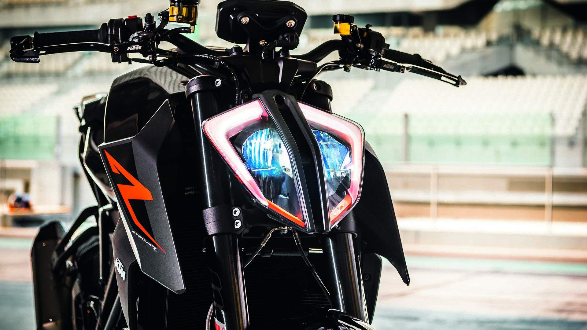

KTM AG is an Austrian bicycle, motorcycle and sports car manufacturer owned by Pierer Mobility AG and Indian manufacturer Bajaj Auto. It was formed in 1992 but traces its foundation to as early as 1934. Today, KTM AG is the parent company of the KTM Group, consisting of a number of motorcycle brands. Wikipedia
Founder: Hans Trunkenpolz
Founded: 1934, Mattighofen, Austria
Headquarters: Mattighofen, Austria
CEO: Stefan Pierer (11 Oct 1996–)
Subsidiaries: Gas Gas, WP Suspension, KTM Motorrad AG, MORE
Parent organization: PIERER Mobility